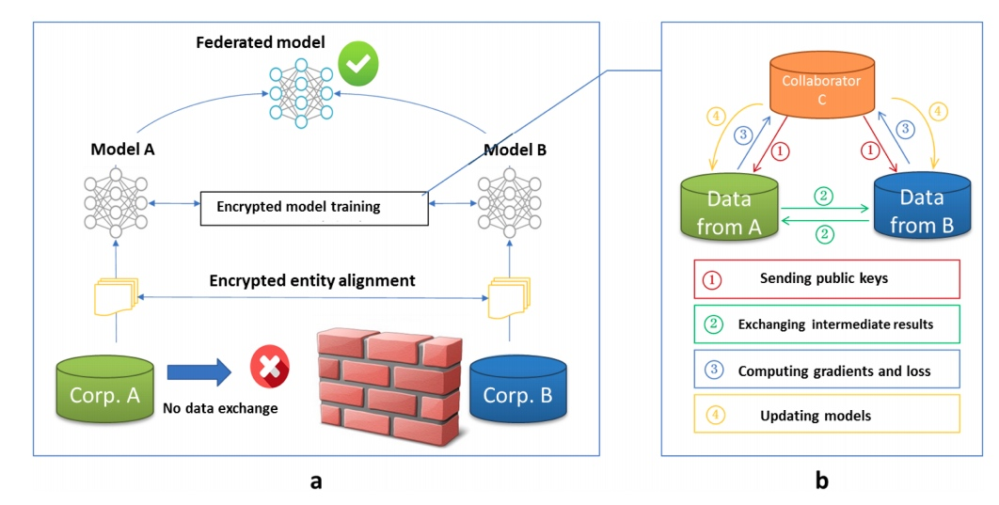
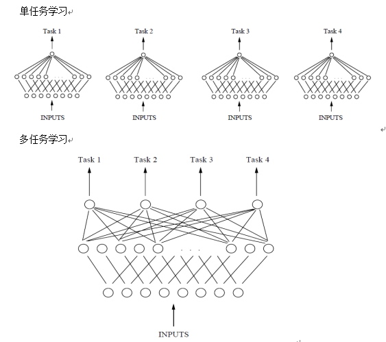

这几天在一些博客中看到了联邦学习和联合学习的内容，刚开始错以为是一个东西，现在及时改正对他们的概念进行简单总结。
联邦学习（Federated Machine Learning）
联邦学习考虑的主要是加密和安全问题，在2016年由谷歌最先提出，原本用于解决安卓手机终端用户在本地更新模型的问题。目标是在保障大数据交换时的信息安全、保护终端数据和个人数据隐私、保证合法合规的前提下，在多参与方或多计算结点之间开展高效率的机器学习，所以其实可以算在分布式机器学习范畴内。
比如说原来有一个保险公司，它对车险的定价基于一些很粗的维度，像驾驶员的年龄和车龄。为什么只能做这么粗的定价？因为它对用户的了解非常少。如果有一个码农张三年纪很轻，但开车却很小心，这一点它就无法了解，也无法进行个性化。
现在它可以和一个移动互联网公司合作。运营商那边有张三的行为数据，但对保险领域并不了解。它们两边需要合作，但又不愿意把数据暴露给对方，以防失控和监管不严的问题。
联邦学习恰恰就是在这可以帮忙，不交换数据，但可以在重叠的数据上建立一个更好的模型。针对上述例子可以使用纵向联邦学习方法。

图中a表示互联网公司，有目标客户的部分数据，b表示保险公司，有目标客户的部分数据，同时也有label值。具体的工作流程如下:
第一步：加密样本对齐。是在系统级做这件事，因此在企业感知层面不会暴露非交叉用户。
第二步：对齐样本进行模型加密训练：
step1：由第三方C向A和B发送公钥，用来加密需要传输的数据；
step2：A和B分别计算和自己相关的特征中间结果，并加密交互，用来求得各自梯度和损失；
step3：A和B分别计算各自加密后的梯度并添加掩码发送给C，同时B计算加密后的损失发送给C；
step4：C解密梯度和损失后回传给A和B，A、B去除掩码并更新模型。
联合特征学习（Joint Feature Learning）
联合学习属于多任务学习的范畴，是一种基于共享表示（shared representation）把多个相关的任务放在一起学习的一种机器学习方法。
多任务学习与单任务学习的区别通过下面这张图就可以直观地表现出来。

与单任务学习相比，多任务学习主要有以下优点:
隐式数据增加，降低过拟合风险。由于所有任务不同程度地存在噪声，当在某些任务 A 上训练模型时，我们的目标是为任务 A 学习一个很好的表征，理想情况下，这个表征能忽略与数据相关的噪声并具有良好的泛化性。由于不同的任务具有不同的噪声模式，所以同时学习两个任务的模型能够学习更一般的表征。只学习任务 A 有可能过拟合任务 A，而联合地学习 A 和 B 使模型能够通过平均噪声模式获得更好的表征。
注意力机制。如果一个任务非常嘈杂或数据量有限并且高维，模型可能难以区分相关与不相关的特征。MTL 可以帮助模型将注意力集中在重要的特征上，因为其它任务将为这些特征的相关性或不相关性提供额外的证据。
窃听。某特征G很容易被任务B学习，但是难以被另一个任务A学习。这可能是因为A以更复杂的方式与特征进行交互，或者因为其它特征阻碍了模型学习G的能力。通过MTL，我们可以允许模型“窃听”，即通过任务B学习G。
表征偏置。MTL任务偏好其它任务也偏好的表征，这造成模型偏差。这将有助于模型在将来泛化到新任务，因为在足够数量的训练任务上表现很好的假设空间也将很好地用于学习具有相同环境的新任务。
许多论文和博客不对联合学习与多任务学习这两个概念进行特别区分，但是多任务学习的概念应该更宽泛一些，联合特征学习应该是多任务学习中一种比较常见的方式。